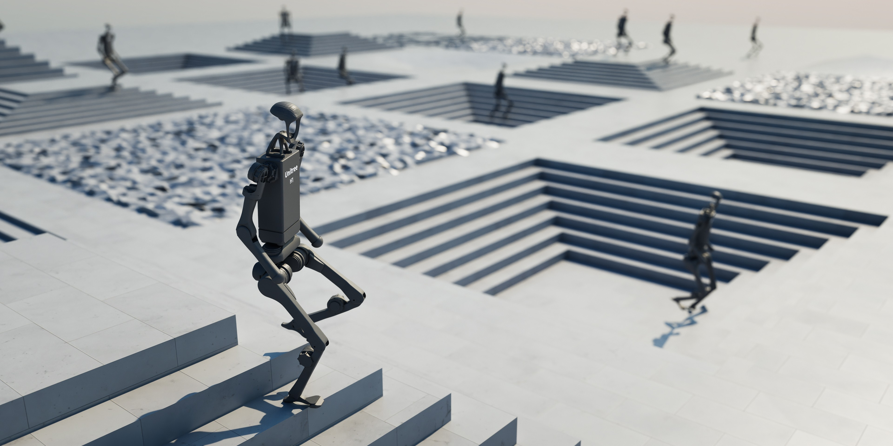
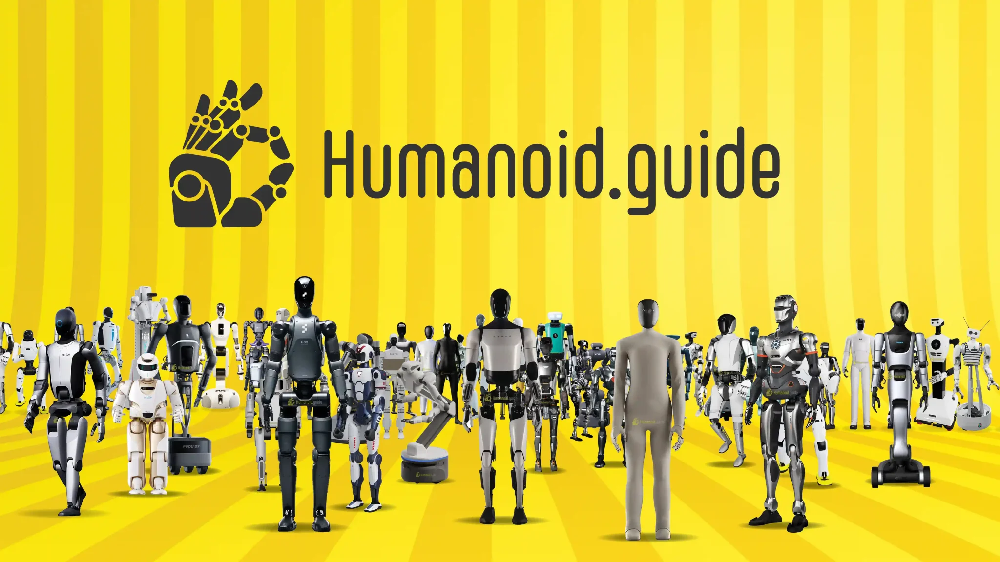

Simulation
Faster, more accurate and massively parallel

DEVELOPMENTS IN THE PAST 5 YEARS (2020-2025)
Faster, more accurate and massively parallel

More accessible robots

Commoditized intelligence
New technology expands the toolbox.
Latest ≠ appropriate.